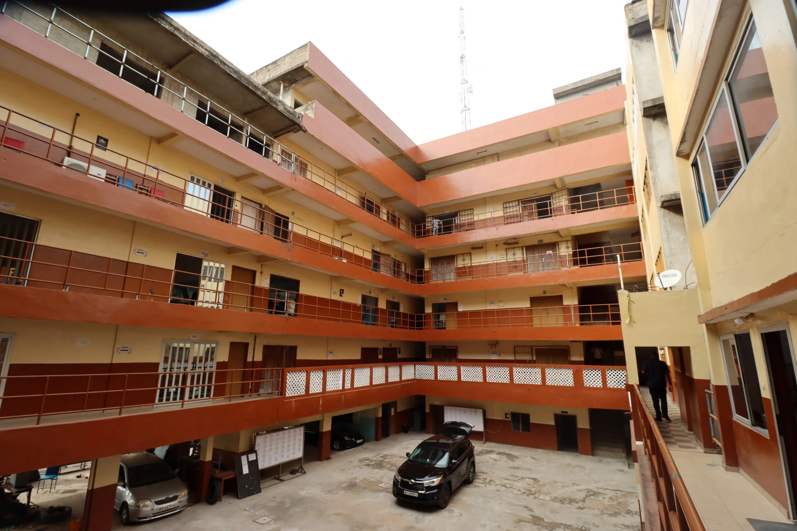
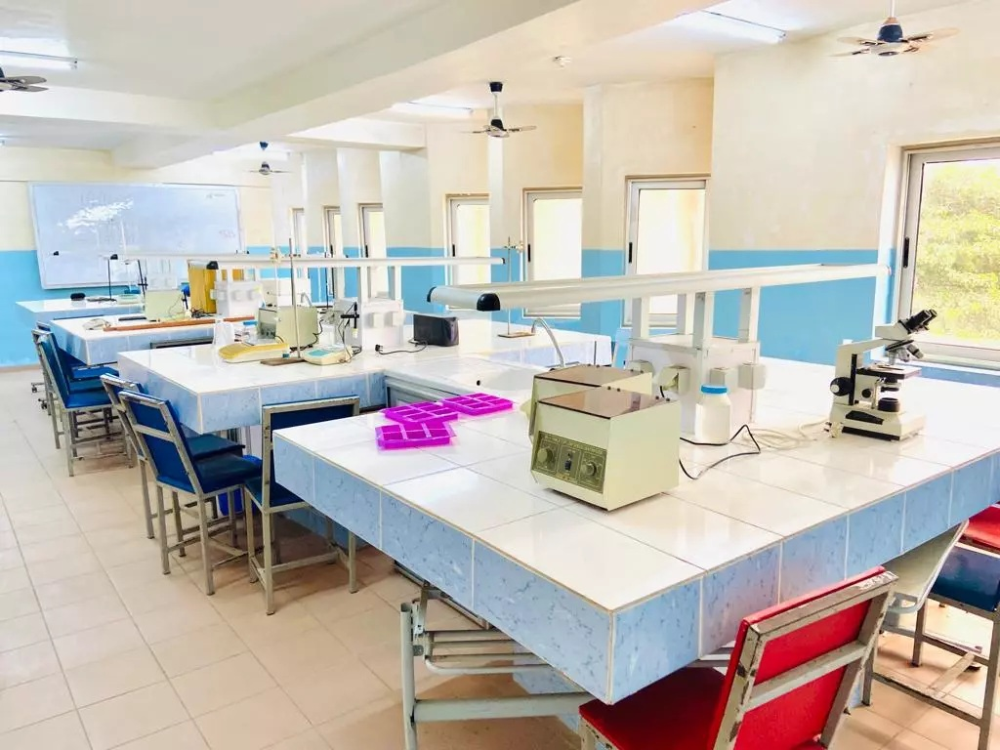
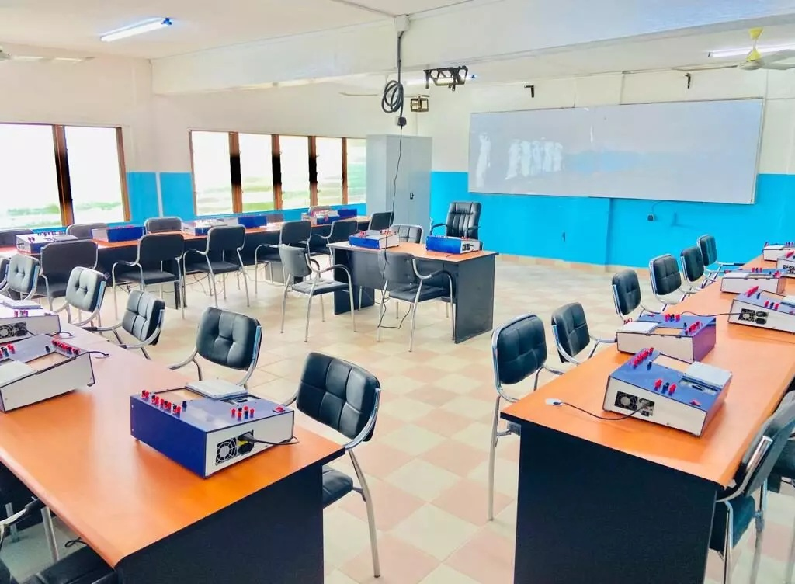

Étudier au Bénin, avec 30 ans d’avance.
Depuis 1992, l’UATM-GASA est la plus ancienne université privée du Bénin : 23 filières agréées, des laboratoires, et des bourses jusqu’à 100 %.
Une université fondée par le Dr Théophane AYI
Née en 1992 sous le nom GASA-FORMATION / SUPELEC BÉNIN, avec 60 étudiants et deux filières (électronique et informatique de gestion), l’école est reconnue par l’État en 1997 puis devient l’Université Africaine de Technologie et de Management en 2006.
Sa mission : offrir au Bénin et à l’Afrique un enseignement supérieur accessible, pratique et tourné vers l’emploi.
Pourquoi choisir l’UATM-GASA ?
Ce qui distingue l’université, d’après ses résultats et ses équipements.
Excellence reconnue
1er de la CEDEAO à la compétition HUAWEI ICT et GAB School Award en 2015.
Formation pratique
Laboratoires de TP, certificats HUAWEI et formations courtes dès la première année.
Bourses
25 %, 50 % ou 100 % des frais selon les résultats et la situation sociale.
Ouverture internationale
Des étudiants de plus de 14 nationalités et des enseignants du monde entier.
Quatre unités de formation
Chaque unité propose des cursus en Licence (3 ans) et en Master (5 ans).
Sciences et Techniques
Réseaux, logiciels, sécurité, énergie, froid, biotechnologie.
8 filièresSciences Agronomiques
Production animale, production végétale, agro-économie.
3 filièresSciences Juridiques et Politiques
Droit, communication et relations internationales.
2 filièresSciences de Gestion
Finance, banque, marketing, RH, logistique, entrepreneuriat.
8 filièresUn campus équipé
6 laboratoires de TP, 2 laboratoires de recherche, fibre optique et WiFi, bibliothèques, terrains de sport.



Nous contacter
Lundi – vendredi, 8h – 17h.
Gbégamey (principal) : 2ème rue à gauche après le CEG Gbégamey
Calavi : bâtiment
Continental Bank, face à la Mairie
Akpakpa : PK6, route de Porto-Novo, carrefour
Abattoir
Porto-Novo : Dangbéklounon · (+229) 95 42 98 18
Agla : près du
commissariat Kouhounnou
(+229) 01 65 78 77 21 · info@uatm-gasa.com